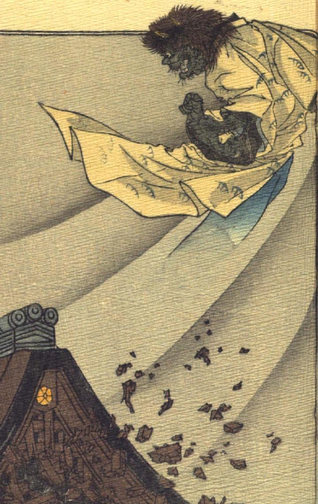

緑色の肌の鬼。頭に髪がふさふさと生え、頭頂に角が2本生えている。目玉は丸く、薄い口ひげ、あごひげが生えている。下を見下ろして、口を開け、笑っているように見える。松のような模様がはいった白い打掛をまとい、左腕で、切られた右腕を掴んでいる。腕は筋肉隆々として、毛が生えている。屋根よりも高く浮き上がり、下半身は宙に消えている。鬼の飛び上がった後に風が巻き上がっているようで、屋根の木材がこぼち崩れている。
著作者：J.Dautremer／出典：親書誌：U426_nichibunken_0121：Le bras de l'ogre／日付：2003／資源識別子：U426_nichibunken_0121_0005_0000
Copyright (c)2010- International Research Center for Japanese Studies, Kyoto, Japan. All rights reserved.